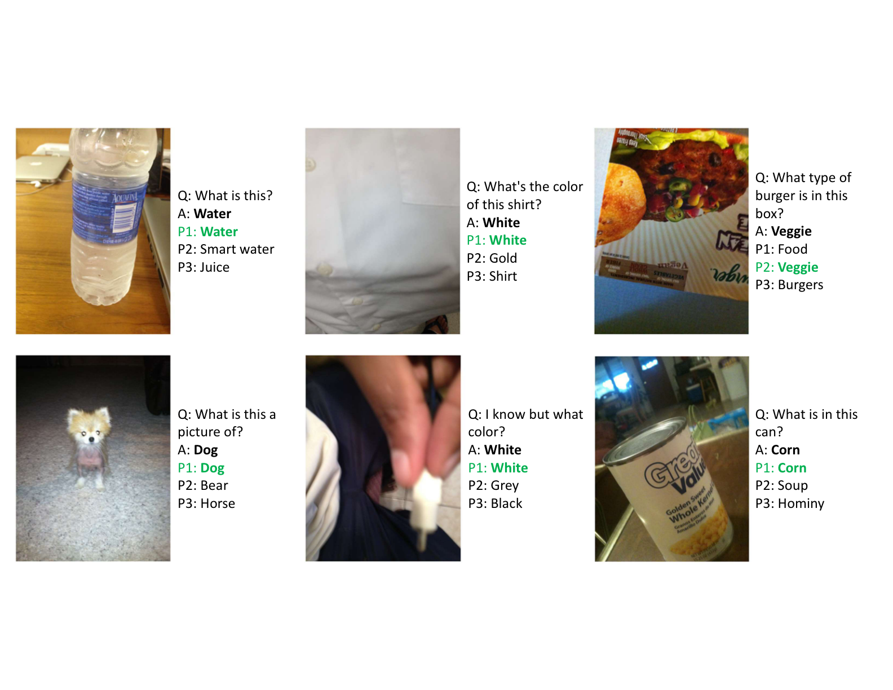

|
Xinyuan Liu I am a full-time research assistant at Vanderbilt University in the MAPLE Lab, working with Professor Jie Ying Wu and Professor Nabil Simaan, specializing in deep learning, vision and language, and robotics. My work focuses on projects like surgical robot action prediction using video and kinematic data and developing AR-based training simulators for minimally invasive surgery. Before that, I received my Master’s degree in Computer Science at the Rice University and my B.S. in Software Engineering at Huazhong University of Science and Technology. I previously interned as a Software Engineer at Ra Labs, optimizing machine learning model pipelines and implementing efficient quantization techniques. |

|
ResearchI'm interested in computer vision, deep learning, generative AI, and image processing. Most of my research is about inferring the physical world (shape, motion, color, light, etc) from images, usually with radiance fields. Some papers are highlighted. |
|
|
Surgical Robot Action Prediction
Xinyuan Liu RA-L (Submitted) project page / publication |
|
|
Surgical Simulation Training System
Xinyuan Liu Arxiv, 2024 project page / publication An AR-based surgical training simulator in Unity, integrating real-time eye gaze tracking and deep learning models to objectively assess performance and accelerate skill acquisition in minimally invasive surgery. |
Selected Projects |
|

|
Be My Eyes: Enhancing Visual Assistance with Multimodal
AI
Xinyuan Liu Arxiv, 2024 An AI-based application aims to assist blind individuals in answering questions about images using the CLIP-Linear VQA Model. |

|
Big Data Classification with Apache Spark and AWS
Xinyuan Liu Personal Project Implemented an efficient ETL pipeline using Apache Spark and AWS for large-scale data processing, achieving 95% classification accuracy on massive text datasets. |
Skills
Programming: Python, C++, C#, C, Java, JavaScript
AI/ML: Computer Vision, NLP, Robotics, PyTorch, TensorFlow
Dev Tools: Docker, AWS, Unity, FastAPI, CI/CD, Git